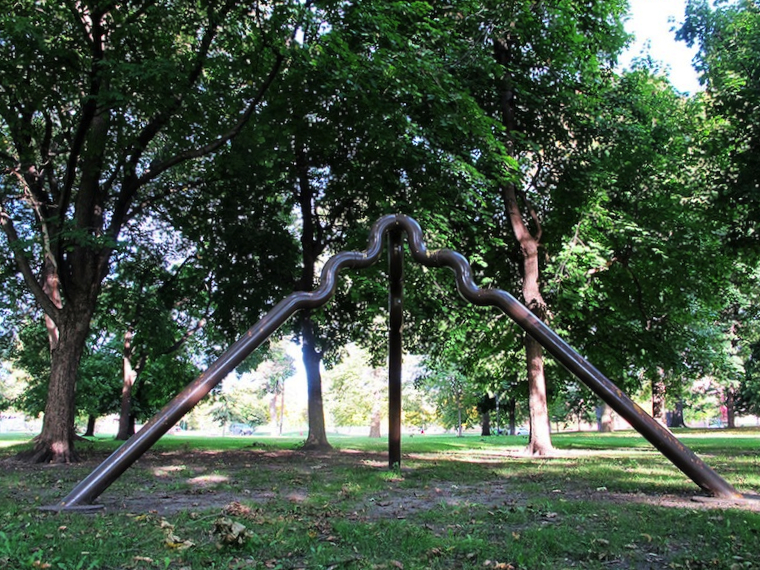

"LIVING WITH ART."
In an attempt at neighborhood revitalization through public art making, the Arts Committee of New Detroit, Inc. establishes the Living With Art initiative in 1971. It results in the creation of at least 12 outdoor murals, sculptures, and large indoor paintings by local artists in various Detroit neighborhoods in 1972 and 1973, including Color Cubes.

Living With Art's stated goals include the following:
"a.) To demonstrate the positive effect of art on the quality of life in the city through work created by local artists.
b.) To provide a showcase for area artists and encourage them to remain in Michigan.
c.) To stimulate neighborhoods to undertake continued improvement.
d.) To build a sense of pride in the community…."
A 1972 proposed program plan elaborates:
This project is aimed at one of the most demoralizing aspects of life for inner-city ghettos, the ugliness of their environment resulting from decades of neglect. While not presuming to initiate basic physical change in the neighborhoods selected, it seeks to demonstrate that beauty can be appreciated even in neglected areas, that it can have a positive effect on the quality of life in these areas, and that this evidence of interest and concern about neighborhood appearance will stimulate residents to initiate additional community improvement efforts.
Living With Art is spearheaded by the late Gertrude Kasle, who at the time owns a well-known gallery ("exceptional," Rubello recalls) in the Fisher Building, and by Rubello's friend Charles McGee, a painter. It is championed by Mayor Gribbs, who lauds the effort to turn Detroit into a "city of art."
It results in the creation of the following, still extant works (all photos taken September-October, 2014):
Steve Foust's (quite worn and faded, but still perceptible) Taj Perfume Company Mural, 1314 Gratiot, Eastern Market
David Tammany's (well-preserved) decoration of the back of the Skillman Building, 100 E. Palmer, Wayne State U

Stan Dolega's (worn and compromised) untitled sculpture on the south end of Belle Isle

Michael Hall's (fairly well-preserved) sculpture Steady in Clark Park, SW Detroit
John Piet's (well-preserved) sculpture Everything is Anything in Pingree Park, east side

Hanna Steibl's (well-preserved) Hard Edge, Soft Edge at Randolph and Centre in Harmonie Park, downtown
In addition to Color Cubes, the following Living With Art works have been lost: an untitled 1972 mural by Roger Mayer in Harmonie Park, Lester Johnson's 1973 mural Continuum on an Edison substation at Grand River and Scotten, two 1972 murals on Wyoming in northwest Detroit by Charles McGree and Ed Morais, respectively, and several 1973 murals inside the demolished Detroit General Hospital by Allen Bryant and Allie McGhee.3 5
See COLOR CUBES , CHARLES MCGEE , andMURALS .